Portfolio
En samling av mina bilder. Alla bilder som visas här är komprimerade WebP-filer för att säkerställa optimal webbprestanda. Högupplösta original finns tillgängliga på Flickr.
Se på Flickr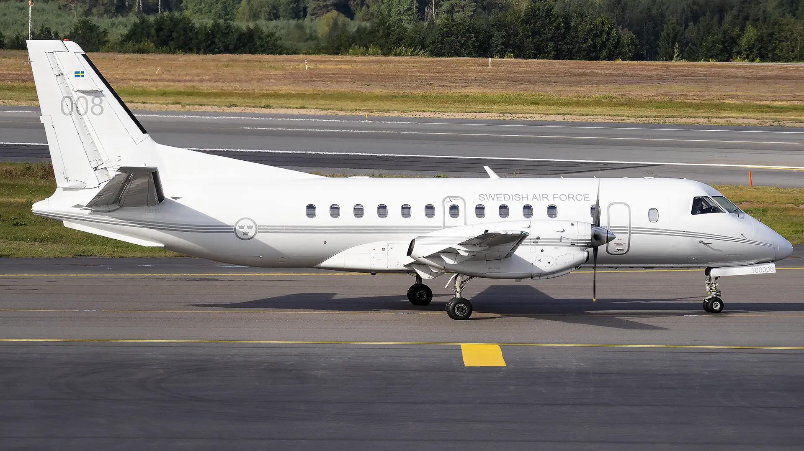
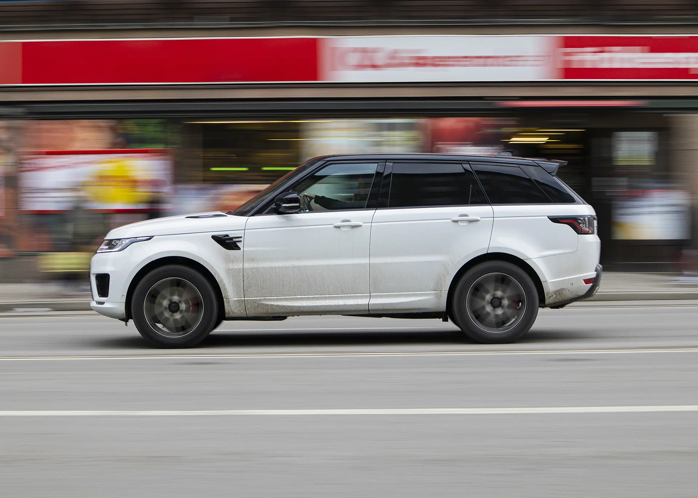
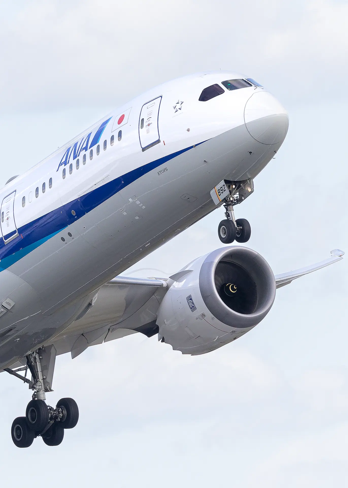
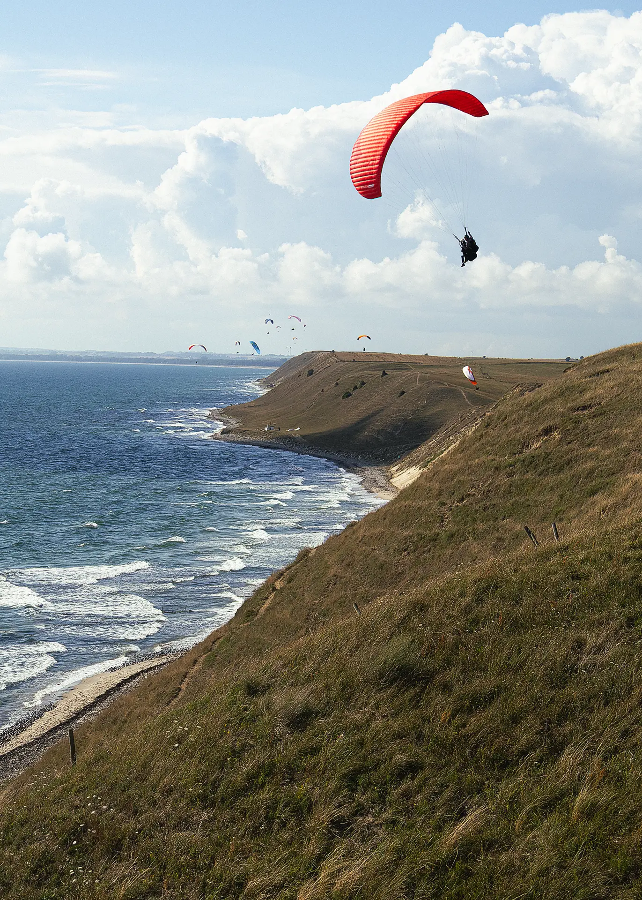
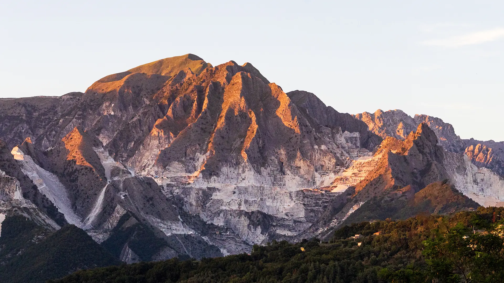
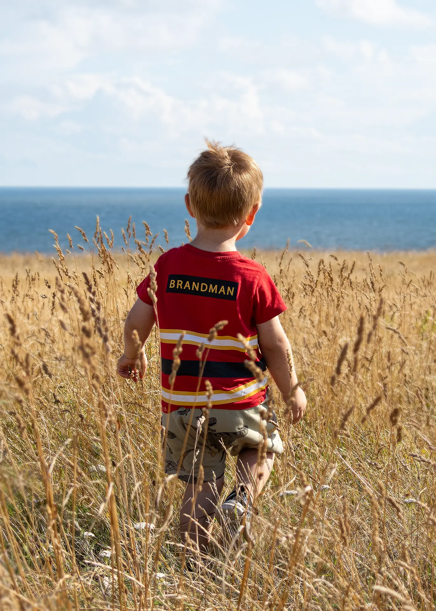
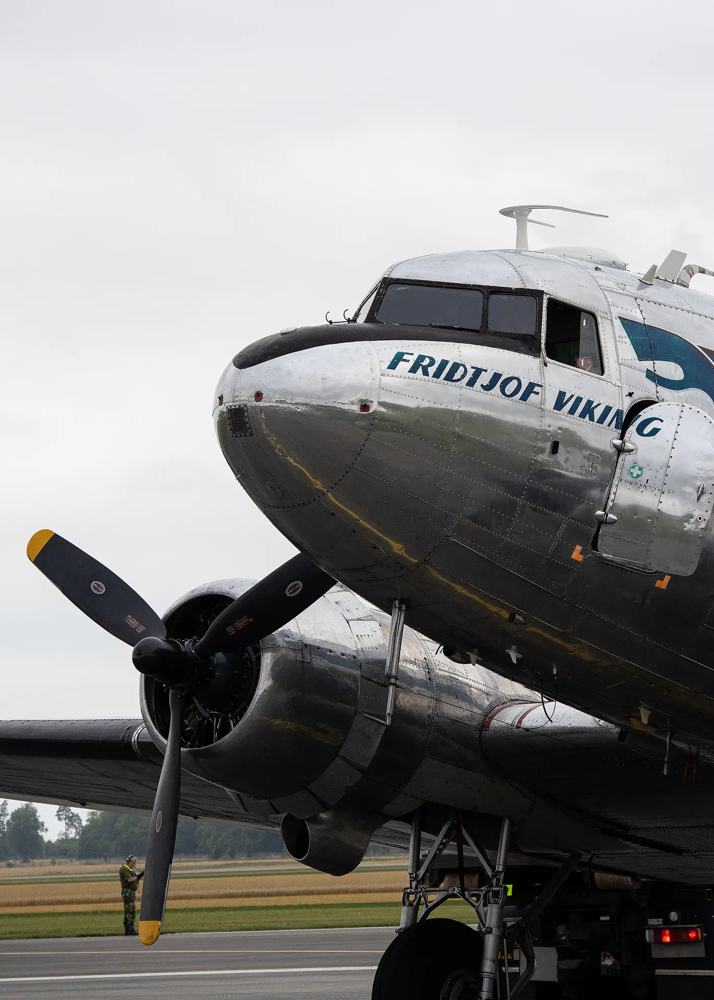
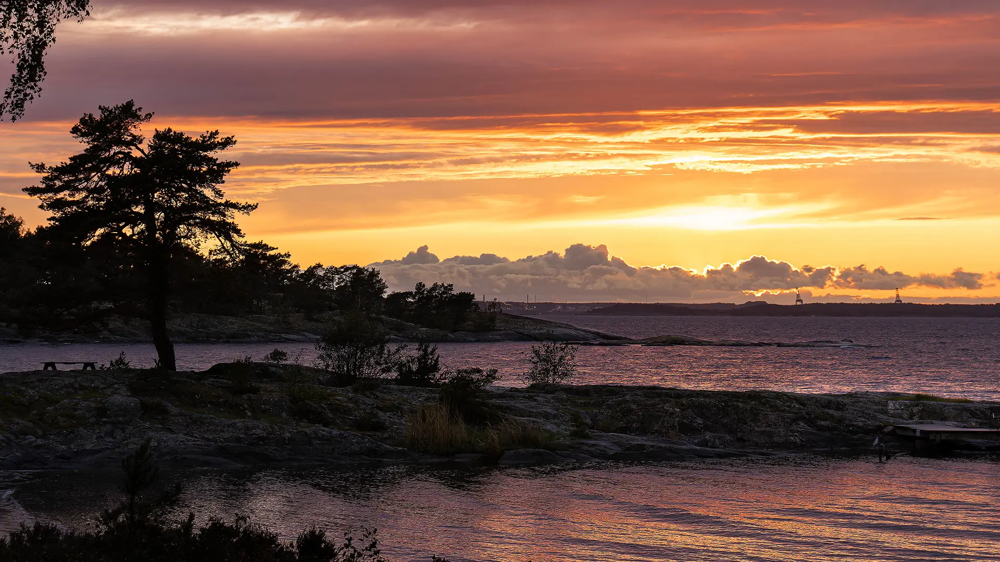
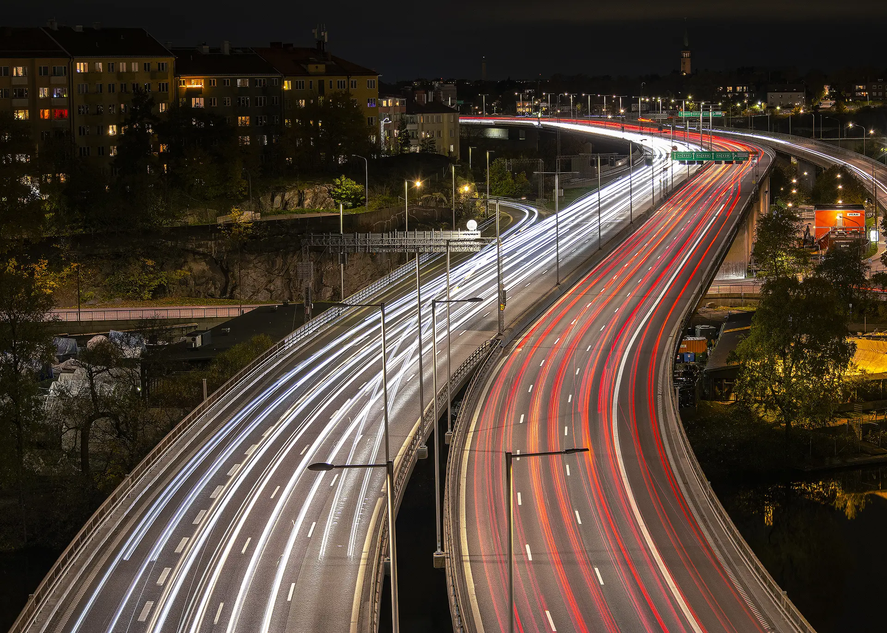
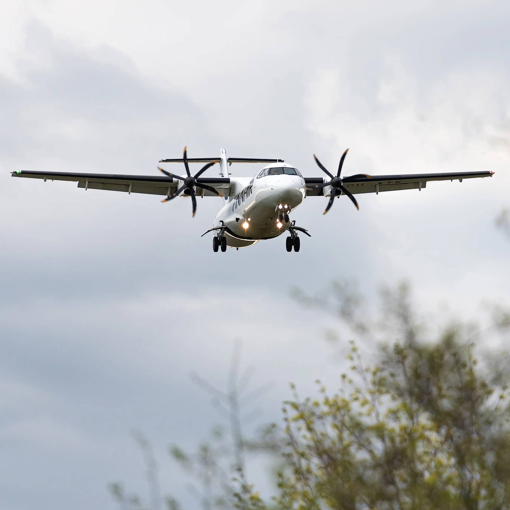
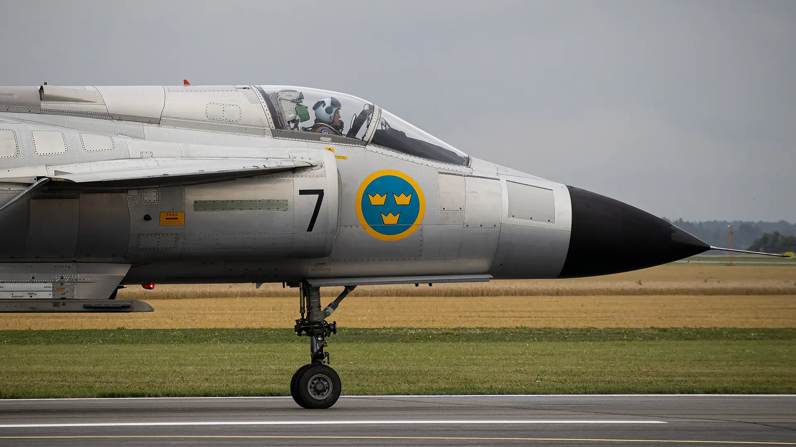
Här tar det stopp!
Fler bilder kommer snart. Under tiden kan du hitta fler av mina bilder på mina sociala kanaler.